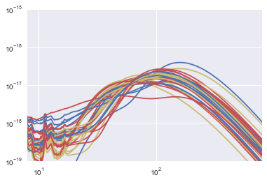

In [1]:
import os
import numpy as np
from astropy.io import ascii
from scipy.interpolate import interp1d
import xidplus
temps=os.listdir('/Users/pdh21/astrodata/SEDs/Berta2013/templates_berta_norm_LIR/')
In [2]:
temps
Out[2]:
['Blue_SF_glx.norm_LIR',
'BroadFIR_SF_glx.norm_LIR',
'Cold_glx.norm_LIR',
'Elliptical.norm_LIR',
'Ly_break.norm_LIR',
'MIR_powlaw_SF_glx.norm_LIR',
'MIRex_SF_glx.norm_LIR',
'Mod_SF_glx.norm_LIR',
'Obs_SF_glx.norm_LIR',
'PAH_DF_glx.norm_LIR',
'Red_SF_glx_1.norm_LIR',
'Red_SF_glx_2.norm_LIR',
'Secular_glx.norm_LIR',
'SF_glx_1.norm_LIR',
'SF_glx_2.norm_LIR',
'SF_Type1_AGN_1.norm_LIR',
'SF_Type1_AGN_2.norm_LIR',
'SF_Type1_AGN_3.norm_LIR',
'SF_Type1_AGN_4.norm_LIR',
'SF_Type2_AGN_1.norm_LIR',
'SF_Type2_AGN_2.norm_LIR',
'SF_Type2_AGN_3.norm_LIR',
'Si_break.norm_LIR',
'Spiral.norm_LIR',
'Torus.norm_LIR',
'Type1_AGN_1.norm_LIR',
'Type2_AGN_1.norm_LIR',
'Type2_AGN_2.norm_LIR',
'Warm_SF_glx.norm_LIR',
'WeakPAH_SF_glx_1.norm_LIR',
'WeakPAH_SF_glx_2.norm_LIR',
'Young_SF_glx.norm_LIR']
Generate Redshift Grid and convert to denominator for flux conversion (e.g. \(4 \pi D_l^2)\)
In [3]:
red=np.arange(0,8,0.01)
red[0]=0.000001
from astropy.cosmology import Planck13
import astropy.units as u
div=(4.0*np.pi * np.square(Planck13.luminosity_distance(red).cgs))
div=div.value
Get appropriate filters
In [4]:
from xidplus import filters
filter=filters.FilterFile(file=xidplus.__path__[0]+'/../test_files/filters.res')
In [9]:
filter.names()
1 Koo-Kron U+ filter (Koo's thesis) - 0001
2 Koo-Kron J+ filter (Koo's thesis) - 0002
3 Koo-Kron F+ filter (Koo's thesis) - 0003
4 Koo-Kron N+ filter (Koo's thesis) - 0004
5 Koo-Kron R band (=127+RG610, data from Koo, Durham) - 0005
6 Couch and Newell (80) BJ (photographic) filter - 0006
7 Couch and Newell (80) RF (photographic) filter - 0007
8 Koo-Kron U+ filter (Bruzual's thesis) - 0008
9 Koo-Kron J+ filter (Bruzual's thesis) - 0009
10 Koo-Kron F+ filter (Bruzual's thesis) - 0010
11 Koo-Kron N+ filter (Bruzual's thesis) - 0011
12 Buser's U filter - 0012
13 Buser's B2 filter - 0013
14 Buser's B3 filter - 0014
15 Buser's V filter - 0015
16 Matthews and Sandage U filter - 0016
17 Matthews and Sandage B filter - 0017
18 Matthews and Sandage V filter - 0018
19 Sandage and Smith B filter - 0019
20 Sandage and Smith V filter - 0020
21 Sandage and Smith R filter - 0021
22 ST-UV14 filter - 0022
23 ST-UV17 filter - 0023
24 ST-UV22 filter - 0024
25 ST-UV27 filter - 0025
26 OAO-UV1 filter - 0026
27 OAO-UV2 filter - 0027
28 OAO-UV3 filter - 0028
29 OAO-UV4 filter - 0029
30 OAO-UV5 filter - 0030
31 OAO-UV6 filter - 0031
32 Johnson's R filter - 0032
33 Johnson's I filter - 0033
34 Johnson's J filter - 0034
35 Johnson's K filter - 0035
36 Johnson's L filter - 0036
37 Butcher's r filter - 0037
38 Butcher's i filter - 0038
39 Butcher-Oemler R filter (10/75 1978, data from Koo, Durham) - 0039
40 Butcher-Oemler R filter ( 5/76 1978, data from Koo, Durham) - 0040
41 Bessell u filter - 0041
42 Bessell g filter - 0042
43 Bessell r filter - 0043
44 UKIRT H FILTER (Leiden, 1983) - 0044
45 R. S. Ellis U(PE) filter - 0045
46 R. S. Ellis J filter - 0046
47 R. S. Ellis R filter - 0047
48 R. S. Ellis N filter - 0048
49 C. MacKay and P. Hall KG3 filter (Cambridge) - 0049
50 C. MacKay and P. Hall I filter (Cambridge) - 0050
51 Gunn g filter + four-shooter Ti CCD + Palomar 200" atmospher - 0051
52 Gunn r filter + four-shooter Ti CCD + Palomar 200" atmospher - 0052
53 Gunn i filter + four-shooter Ti CCD + Palomar 200" atmospher - 0053
54 Gunn z filter + four-shooter Ti CCD + Palomar 200" atmospher - 0054
55 IR J filter + Palomar 200 IR detectors + atmosphere - 0055
56 IR H filter + Palomar 200 IR detectors + atmosphere - 0056
57 IR K filter + Palomar 200 IR detectors + atmosphere - 0057
58 NOAO CTIO 4m ISPI J#186 - 0058
59 NOAO CTIO 4m ISPI H#187 - 0059
60 NOAO CTIO 4m ISPI K'#188 - 0060
61 A. Tyson J filter - 0061
62 A. Tyson R filter - 0062
63 A. Tyson I filter - 0063
64 ANS 1550 Wide Filter (J. Koorneef) - 0064
65 ANS 1800 Filter (J. Koorneef) - 0065
66 ANS 2200 Filter (J. Koorneef) - 0066
67 ANS 2500 Filter (J. Koorneef) - 0067
68 ANS 3300 Filter (J. Koorneef) - 0068
69 Approximate U band for Lilly and Cowie - 0069
70 Approximate I band for Lilly and Cowie - 0070
71 IRAS 12 micron, Neugebauer etal 1984,ApJL,278,L1 - 0071
72 IRAS 25 micron, Neugebauer etal 1984,ApJL,278,L1 - 0072
73 IRAS 60 micron, Neugebauer etal 1984,ApJL,278,L1 - 0073
74 IRAS 100 micron, Neugebauer etal 1984,ApJL,278,L1 - 0074
75 H filter Bessell and Brett PASP 100, 1134, 1988 - 0075
76 J filter Bessell and Brett PASP 100, 1134, 1988 - 0076
77 K filter Bessell and Brett PASP 100, 1134, 1988 - 0077
78 L (3.5 microns) filter Bessell and Brett PASP 100, 1134, 1988 - 0078
79 L' (3.8 microns) filter Bessell and Brett PASP 100, 1134, 1988 - 0079
80 M filter Bessell and Brett PASP 100, 1134, 1988 - 0080
81 IRAM MAMBO-1 1.2 mm, 37 channel (winter 99/00 -today) - 0081
82 IRAM MAMBO-2 1.2 mm,117 channel - 0082
83 g Gunn (original) - 0083
84 r Gunn (original) - 0084
85 i Gunn (original) - 0085
86 z (original) - 0086
87 z + RCA - 0087
88 CCD RCA ESO (JPP reference) - 0088
89 CCD RCA CAHA (Manual d'utilisateurs) - 0089
90 B CAHA (original manuel) - 0090
91 B Bessell - 0091
92 V Bessell - 0092
93 R Bessell - 0093
94 I Bessell - 0094
95 K Prime CFHT Redeye - 0095
96 CCD RCA2 CFHT (Manuel utilisateurs) - 0096
97 Bj TYSON (orig. filter AT, private com.) - 0097
98 CCD TEK#25 (ESO, Manuel Utilisateurs) - 0098
99 CCD LORAL#34 (ESO, Manuel Utilisateurs) - 0099
100 CCD SAIC#1 (CFH, Manuel Utilisateurs) - 0100
101 CCD Lick2 CFHT (CFH, Manuel Utilisateurs) - 0101
102 ESO NTT SUSI B Bessell#639 - 0102
103 ESO NTT SUSI V Bessell#641 - 0103
104 ESO NTT SUSI R Bessell#642 - 0104
105 ESO NTT EMMI V#606 - 0105
106 B#4402 CFHT - 0106
107 R#4609 CFHT - 0107
108 B #1412 CFHT FOCAM - 0108
109 B #1414 CFHT B Tyson selon JB - 0109
110 V #1504 CFHT - 0110
111 V #1510 CFHT FOCAM - 0111
112 R #1611 CFHT - 0112
113 I #1808 CFHT FOCAM - 0113
114 I #1809 CFHT FOCAM - 0114
115 Thomson THX 31156 CCD#17 ESO - 0115
116 Thomson THX 31156 CCD#18 ESO - 0116
117 R#585 Bessell ESO - 0117
118 K #6 UKIRT - 0118
119 Passe-tout - 0119
120 F555W + WFPC2 normalized - 0120
121 F814W + WFPC2 normalized - 0121
122 F300W + WFPC2 normalized - 0122
123 F450W + WFPC2 normalized - 0123
124 F606W + WFPC2 normalized - 0124
125 F702W + WFPC2 normalized - 0125
126 F675W + WFPC2 normalized - 0126
127 F336W + WFPC2 normalized - 0127
128 ESO NTT 3.6m SOFI Js - 0128
129 ESO NTT 3.6m SOFI J - 0129
130 ESO NTT 3.6m SOFI H - 0130
131 ESO NTT 3.6m SOFI Ks - 0131
132 KPNO IRIM 2.12 Filter - 0132
133 KPNO IRIM 2.14 Filter - 0133
134 KPNO IRIM 2.16 Filter - 0134
135 KPNO IRIM H Filter - 0135
136 KPNO IRIM J Filter - 0136
137 KPNO IRIM K Filter - 0137
138 KPNO IRIM K' Filter - 0138
139 VLT Test Camera Detector's Quantum Efficiency - 0139
140 B-band filter of the VLT Test Camera - 0140
141 V-band filter of the VLT Test Camera - 0141
142 R-band filter of the VLT Test Camera - 0142
143 I-band filter of the VLT Test Camera - 0143
144 SUSI2's CCDs Quantum Efficiency - 0144
145 SUSI Bessell U #801 - 0145
146 SUSI Bessell B #811 - 0146
147 SUSI Bessell V #812 - 0147
148 SUSI Bessell R #813 - 0148
149 SUSI Bessell I #814 - 0149
150 FORS Standard U (including instrument + CCD) - 0150
151 FORS Standard B (including instrument + CCD) - 0151
152 FORS Standard V (including instrument + CCD) - 0152
153 FORS Cousins R (including instrument + CCD) - 0153
154 FORS Cousins I (including instrument + CCD) - 0154
155 FORS Gunn G (including instrument + CCD) - 0155
156 ESO 2.2m WFI U#841 + CCD#57 + wfi_2p2_optics (U/38 AKA U38) - 0156
157 ESO 2.2m WFI B#842 + CCD#57 (old B/99, for new see B/123) - 0157
158 ESO 2.2m WFI V#843 + CCD#57 + wfi_2p2_optics (V/89) - 0158
159 ESO 2.2m WFI Rc#844 + CCD#57 + wfi_2p2_optics (Rc/162) - 0159
160 ESO 2.2m WFI Ic#845 + CCD#57 + wfi_2p2_optics (Ic/lwp) - 0160
161 ESO 2.2m WFI Z#846 + CCD#57 + wfi_2p2_optics (Z+/61) - 0161
162 ESO 2.2m WFI U#877 + CCD57 + wfi_2p2_optics (U/50 AKA U35) - 0162
163 ESO 2.2m WFI B#878 + CCD#57 + wfi_2p2_optic (latest B filter B/123) - 0163
164 SDSS u (http://www.sdss.org/dr7/instruments/imager/index.html) - 0164
165 SDSS g (http://www.sdss.org/dr7/instruments/imager/index.html) - 0165
166 SDSS r (http://www.sdss.org/dr7/instruments/imager/index.html) - 0166
167 SDSS i (http://www.sdss.org/dr7/instruments/imager/index.html) - 0167
168 SDSS z (http://www.sdss.org/dr7/instruments/imager/index.html) - 0168
169 ESO VST OmegaCAM u - 0169
170 ESO VST OmegaCAM g - 0170
171 ESO VST OmegaCAM r - 0171
172 ESO VST OmegaCAM i - 0172
173 ESO VST OmegaCAM z - 0173
174 CFHT CFH12k B (Mould) - 0174
175 CFHT CFH12k V (Mould) - 0175
176 CFHT CFH12k R (Mould) - 0176
177 CFHT CFH12k I (Mould) - 0177
178 CFHT CFH12k Z (Prime) - 0178
179 JCMT SCUBA 450 micron - 0179
180 JCMT SCUBA 850 micron - 0180
181 AzTEC 1.1 mm - 0181
182 Infamous 2.2m UH8K B filter + loral3 + MK atmosphere - 0182
183 2.2m UH8K V filter + loral 3 + atmosphere - 0183
184 2.2m UH8K I filter + MK atmosphere - 0184
185 KPNO B, from AAT Users Manual - 0185
186 H+K filter - 0186
187 Wyin filter U (filter + CCD reponse) - 0187
188 Wyin filter B (filter + CCD reponse) - 0188
189 ESO VLT ISAAC J (ESO web pages) - 0189
190 ESO VLT ISAAC H (ESO web pages) - 0190
191 ESO VLT ISAAC Ks (ESO web pages) - 0191
192 ESO VLT ISAAC L (ESO web pages) - 0192
193 ESO VLT ISAAC M (ESO web pages) - 0193
194 Palomar 200" WIRC J - 0194
195 Palomar 200" WIRC K - 0195
196 Calar Alto 3.5m Omega2000 J - 0196
197 Calar Alto 3.5m OmegaPrime K - 0197
198 Spitzer IRAC CH1 (3.6 micron) - 0198
199 Spitzer IRAC CH2 (4.5 microns) - 0199
200 Spitzer IRAC CH3 (5.8 microns) - 0200
201 Spitzer IRAC CH4 (8.0 microns) - 0201
202 Spitzer MIPS CH1 (24 microns) - 0202
203 Subaru SuprimeCam U - 0203
204 Subaru SuprimeCam B - 0204
205 Subaru SuprimeCam V - 0205
206 Subaru SuprimeCam r - 0206
207 Subaru SuprimeCam i - 0207
208 Subaru SuprimeCam z - 0208
209 UH 2.2m QUIRC H+K (AKA HK') - 0209
210 CFHT MEgaCam i2 AKA y (new,after October 2007 - http://cadcwww.dao.nrc.ca/megapipe/docs/filters.html) - 0210
211 NOAO KPNO 4m FLAMINGOS J (J-2000toJuly2003) - 0211
212 NOAO KPNO 4m FLAMINGOS H (H-2000toJuly2003) - 0212
213 NOAO KPNO 4m FLAMINGOS Ks (Ks-2000toJuly2003) - 0213
214 Spitzer MIPS CH2 (70 micron) - 0214
215 Spitzer MIPS CH3 (160 micron) - 0215
216 SPIRE 250 micron - 0216
217 SPIRE 350 micron - 0217
218 SPIRE 500 micron - 0218
219 2MASS J - 0219
220 2MASS H - 0220
221 2MASS Ks - 0221
222 UKIRT WFCAM (UKIDSS) J - 0222
223 UKIRT WFCAM (UKIDSS) H - 0223
224 UKIRT WFCAM (UKIDSS) K - 0224
225 INT WFC u - 0225
226 INT WFC g - 0226
227 INT WFC r - 0227
228 INT WFC i - 0228
229 INT WFC z - 0229
230 NOAO KPNO 4m MOSAIC1 U band (k1001) - 0230
231 NOAO KPNO 4m MOSAIC1 g band (SDSS k1017) - 0231
232 NOAO KPNO 4m MOSAIC1 r band (SDSS k1018) - 0232
233 NOAO KPNO 4m MOSAIC1 i band (SDSS k1019) - 0233
234 NOAO KPNO 4m MOSAIC1 z band (SDSS k1020) - 0234
235 NOAO CTIO 4m MOSAIC2 u band (SDSS c6022) - 0235
236 NOAO CTIO 4m MOSAIC2 g band (SDSS c6017) - 0236
237 NOAO CTIO 4m MOSAIC2 r band (SDSS c6018) - 0237
238 NOAO CTIO 4m MOSAIC2 i band (SDSS c6019) - 0238
239 NOAO CTIO 4m MOSAIC2 z band (SDSS c6022) - 0239
240 NOAO CTIO 4m MOSAIC2 U band (c6001) - 0240
241 CFHT MEgaCam u* http://www2.cadc-ccda.hia-iha.nrc-cnrc.gc.ca/community/CFHTLS-SG/docs/extra/filters.html - 0241
242 CFHT MegaCam g http://www2.cadc-ccda.hia-iha.nrc-cnrc.gc.ca/community/CFHTLS-SG/docs/extra/filters.html - 0242
243 CFHT MegaCam r http://www2.cadc-ccda.hia-iha.nrc-cnrc.gc.ca/community/CFHTLS-SG/docs/extra/filters.html - 0243
244 CFHT MegaCam i AKA i1 (old, before Octorber 2007 for new see CFHT MegaCam i2 AKA y; http://cadcwww.dao.nrc.ca/megapipe/docs/filters.html) - 0244
245 CFHT MegaCam z http://www2.cadc-ccda.hia-iha.nrc-cnrc.gc.ca/community/CFHTLS-SG/docs/extra/filters.html - 0245
246 AKARI N60 http://www.ir.isas.jaxa.jp/AKARI/Observation/RSRF/FIS_FAD/index.html - 0246
247 AKARI WIDE-S http://www.ir.isas.jaxa.jp/AKARI/Observation/RSRF/FIS_FAD/index.html - 0247
248 AKARI WIDE-L http://www.ir.isas.jaxa.jp/AKARI/Observation/RSRF/FIS_FAD/index.html - 0248
249 AKARI N160 http://www.ir.isas.jaxa.jp/AKARI/Observation/RSRF/FIS_FAD/index.html - 0249
250 PACS 70 Instrument Simulator as of Herschel Launch - 0250
251 PACS 100 Instrument Simulator as of Herschel Launch - 0251
252 PACS 160 Instrument Simulator as of Herschel Launch - 0252
253 NOAO KPNO 4m FLAMINGOS J from 2003 to present: http://flamingos.astro.ufl.edu/Filter_Info/index.html (FLAMINGOS.BARR.J.MAN240B.WarmFilter.txt) - 0253
254 NOAO KPNO 4m FLAMINGOS H from 2003 to present: http://flamingos.astro.ufl.edu/Filter_Info/index.html (FLAMINGOS.BARR.H.MAN109A.WarmFilter.txt) - 0254
255 NOAO KPNO 4m FLAMINGOS Ks from 2003 to present: http://flamingos.astro.ufl.edu/Filter_Info/index.html (FLAMINGOS.BARR.Ks.MAN306A.WarmFilter.txt) - 0255
256 NOAO KPNO 4m FLAMINGOS K from 2003 to present: http://flamingos.astro.ufl.edu/Filter_Info/index.html (FLAMINGOS.K-band.2000toPresentDay.NOAO-OCLI-Filter.txt) - 0256
257 Subaru SuprimeCam Rc - 0257
258 Subaru SuprimeCam Ic - 0258
259 Subaru SuprimeCam g - 0259
260 Spitzer IRS 16 micron (bluePUtrans) - 0260
261 Spitzer IRS 22 micron (redPUtrans) - 0261
262 ESO VLT VIMOS U (transmission is average of 4 quadrants) - 0262
263 ESO VLT VIMOS B (transmission is average of 4 quadrants) - 0263
264 ESO VLT VIMOS V (transmission is average of 4 quadrants) - 0264
265 ESO VLT VIMOS R (transmission is average of 4 quadrants) - 0265
266 ESO VLT VIMOS I (transmission is average of 4 quadrants) - 0266
267 ESO VLT VIMOS z (transmission is average of 4 quadrants) - 0267
268 NOAO KPNO 4m MOSAIC1 R - 0268
269 UKIRT WFCAM (UKIDSS) Z - 0269
270 UKIRT WFCAM (UKIDSS) Y - 0270
271 CFHT WIRCam J (cfh8101) - 0271
272 CFHT WIRCam H (cfh8201) - 0272
273 CFHT WIRCam Ks (cfh8302) - 0273
274 NOAO KPNO 4m MOSAIC1 Bw - 0274
275 NOAO KPNO 4m MOSAIC1 B - 0275
276 NOAO KPNO 4m MOSAIC1 V - 0276
277 NOAO KPNO 4m MOSAIC1 I - 0277
278 NOAO CTIO 4m MOSAIC2 B - 0278
279 NOAO CTIO 4m MOSAIC2 V - 0279
280 NOAO CTIO 4m MOSAIC2 R - 0280
281 NOAO CTIO 4m MOSAIC2 I - 0281
282 TIFKAM/ONIS J - 0282
283 TIFKAM/ONIS H - 0283
284 TIFKAM/ONIS K - 0284
285 90prime SDSS-u - 0285
286 90prime SDSS-z - 0286
287 90prime U - 0287
288 90prime B - 0288
289 90prime V - 0289
290 90prime R - 0290
291 90prime I - 0291
292 90prime_Washington_M - 0292
293 NEWFIRM J - 0293
294 NEWFIRM H - 0294
295 NEWFIRM Ks - 0295
296 GALEX NUV - 0296
297 GALEX FUV - 0297
298 MMT Megacam u - 0298
299 MMT Megacam g - 0299
300 MMT Megacam r - 0300
301 MMT Megacam i - 0301
302 MMT Megacam z - 0302
303 Subaru MOIRCS Y - 0303
304 Subaru MOIRCS J - 0304
305 Subaru MOIRCS H - 0305
306 Subaru MOIRCS Ks - 0306
307 Subaru MOIRCS K - 0307
308 APEX SABOCA 350 micron - 0308
309 APEX LABOCA 850 micron - 0309
310 HST NIC3 F110W (J) - 0310
311 HST NIC3 F160W (H) - 0311
312 HST NIC3 F222M (K) - 0312
313 HST ACS/WFC F435W (B) - 0313
314 HST ACS/WFC F606W (V) - 0314
315 HST ACS/WFC F814W (I) - 0315
316 HST ACS/WFC F475W (g) - 0316
317 HST ACS/WFC F625W (r) - 0317
318 HST ACS/WFC F775W (i) - 0318
319 HST ACS/WFC F850LP (z) - 0319
320 Subaru SuprimeCam IA427 - 0320
321 Subaru SuprimeCam IA445 - 0321
322 Subaru SuprimeCam IA464 - 0322
323 Subaru SuprimeCam IA484 - 0323
324 Subaru SuprimeCam IA505 - 0324
325 Subaru SuprimeCam IA527 - 0325
326 Subaru SuprimeCam IA550 - 0326
327 Subaru SuprimeCam IA574 - 0327
328 Subaru SuprimeCam IA598 - 0328
329 Subaru SuprimeCam IA624 - 0329
330 Subaru SuprimeCam IA651 - 0330
331 Subaru SuprimeCam IA679 - 0331
332 Subaru SuprimeCam IA709 - 0332
333 Subaru SuprimeCam IA738 - 0333
334 Subaru SuprimeCam IA767 - 0334
335 Subaru SuprimeCam IA797 - 0335
336 Subaru SuprimeCam IA827 - 0336
337 Subaru SuprimeCam IA856 - 0337
338 Subaru SuprimeCam IA907 - 0338
339 Subaru SuprimeCam NA656 - 0339
340 Subaru SuprimeCam NB711 - 0340
341 Subaru SuprimeCam NB816 - 0341
342 Subaru SuprimeCam NB921 - 0342
343 LBT-LBC blue Uspec - 0343
344 LBT-LBC blue U - 0344
345 LBT-LBC blue B - 0345
346 LBT-LBC blue V - 0346
347 LBT-LBC blue g (#1) - 0347
348 LBT-LBC blue r (#1) - 0348
349 LBT-LBC red V - 0349
350 LBT-LBC red R - 0350
351 LBT-LBC red I - 0351
352 LBT-LBC red r - 0352
353 LBT-LBC red i - 0353
354 LBT-LBC red z - 0354
355 LBT-LBC red F972N20 - 0355
356 LBT-LBC red Y - 0356
357 ISO CAM LW2 (6.7/7 micron) - 0357
358 ISO CAM LW10 (12 micron) - 0358
359 ISO CAM LW3 (14.3/15 micron) -0359
360 ISO PHT C100-DETECTOR C90-FILTER (90/5 micron) - 0360
361 ISO PHT C200-DETECTOR C160-FILTER (170/5 micron) - 0361
362 VISTA VIRCAM Z - 0362
363 VISTA VIRCAM Y - 0363
364 VISTA VIRCAM J - 0364
365 VISTA VIRCAM H - 0365
366 VISTA VIRCAM Ks - 0366
367 HST WFC3 F125W [J band]- 0367
368 HST WFC3 F160W [H band]- 0368
369 AKARI IRC N2 - 0369
370 AKARI IRC N3 - 0370
371 AKARI IRC N4 - 0371
372 AKARI IRC S7 - 0372
373 AKARI IRC S9W - 0373
374 AKARI IRC S11 - 0374
375 AKARI IRC L15 - 0375
376 AKARI IRC L18W - 0376
377 AKARI IRC L24 - 0377
378 WISE 1 (3.4 mum) - 0378
379 WISE 2 (4.6 mum) - 0379
380 WISE 3 (12 mum) - 0380
381 WISE 4 (22 mum) - 0381
382 Pan-STARRS1 gp1 - 0382
383 Pan-STARRS1 rp1 - 0383
384 Pan-STARRS1 ip1 - 0384
385 Pan-STARRS1 zp1 - 0385
386 Pan-STARRS1 yp1 - 0386
387 Pan-STARRS1 wp1 - 0387
388
In [10]:
SPIRE_250=filter.filters[215]
SPIRE_350=filter.filters[216]
SPIRE_500=filter.filters[217]
PACS_100=filter.filters[250]
PACS_160=filter.filters[251]
bands=[SPIRE_250,SPIRE_350,SPIRE_500,PACS_100,PACS_160]
eff_lam=[250.0,350.0,500.0,100.0, 160.0]
In [11]:
for b in bands:
print(b.name)
SPIRE 250 micron - 0216
SPIRE 350 micron - 0217
SPIRE 500 micron - 0218
PACS 100 Instrument Simulator as of Herschel Launch - 0251
PACS 160 Instrument Simulator as of Herschel Launch - 0252
In [12]:
import pandas as pd
template=ascii.read('/Users/pdh21/astrodata/SEDs/Berta2013/templates_berta_norm_LIR/'+temps[0])
df=pd.DataFrame(template['col1'].data/1E4,columns=['wave'])
print(template['col1'].data/1E4)
SEDs=np.empty((len(temps),len(bands),red.size))
for i in range(0,len(temps)):
template=ascii.read('/Users/pdh21/astrodata/SEDs/Berta2013/templates_berta_norm_LIR/'+temps[i])
df[temps[i]]=1E30*3.826E33*template['col2']*((template['col1']/1E4)**2)/3E14
flux=template['col2']*((template['col1']/1E4)**2)/3E14
wave=template['col1']/1E4
for z in range(0,red.size):
sed=interp1d((red[z]+1.0)*wave, flux)
for b in range(0,len(bands)):
SEDs[i,b,z]=1E30*3.826E33*(1.0+red[z])*filters.fnu_filt(sed(bands[b].wavelength/1E4),3E8/(bands[b].wavelength/1E10),bands[b].transmission,3E8/(eff_lam[b]*1E-6),sed(eff_lam[b]))/div[z]
[ 9.09999900e-03 9.40000000e-03 9.59999900e-03 ..., 1.92899989e+03
1.93899920e+03 1.94899898e+03]
In [31]:
temps[0]
Out[31]:
'Blue_SF_glx.norm_LIR'
In [17]:
import pylab as plt
%matplotlib inline
plt.semilogy(red,SEDs[0,0,:]*np.power(10.0,12))
plt.semilogy(red,SEDs[0,1,:]*np.power(10.0,12),c='g')
plt.semilogy(red,SEDs[0,2,:]*np.power(10.0,12),c='r')
plt.semilogy(red,SEDs[0,3,:]*np.power(10.0,12),c='m')
plt.ylim(1E-4,1E4)
Out[17]:
(0.0001, 10000.0)

In [13]:
np.save('SED_Herschel', SEDs)
In [22]:
ls
SED_SPIRE_PACS100.npy
SED_prior_model.ipynb
XID+SPIRE.pkl
XID+example_run_script.ipynb
XID+posterior_analysis_validation.ipynb
test.fits
test.pkl
In [59]:
for i in range(0,len(temps)):
template=ascii.read('/Users/pdh21/astrodata/SEDs/Berta2013/templates_berta_norm_LIR/'+temps[i])
flux=template['col2']*((template['col1']/1E4)**2)/3E14
wave=template['col1']/1E4
plt.loglog(wave,flux)
plt.xlim(8,800)
plt.ylim(10E-20,10E-16)
plt.plot([250.0,350.0,500.0, 100.0],SEDs[i,:,0])

In [14]:
df.to_pickle('SEDS_Herschel_full.pkl')
In [ ]: